Data Representation
Representation and number systems
In terms of the exam, the most important concept is value versus representation of any number. In practice, this means you need to accept that you cannot always represent a value across different bases using the same number of symbols.
One value, many representations. A representation is a way of using or describing a value, for example \(1010_2\) and \(10_{10}\) denote the same value. A typical exam question (2019) may ask why we use different representations- one can cite how whilst binary is most appropriate for digital logic circuits (due to the high noise immunity it offers), it is not easy for humans to read nor compute, and hence we introduce the decimal system to handle daily life. We come up with other number systems such as hexadecimal as it is more efficient on a bus (wider range for the same number of symbols) than systems such as octal or decimal.
There are four main number systems we will use:
| Number system | Symbols | Base |
|---|---|---|
| Binary | 0, 1 |
2 |
| Octal | 0, 1, 2, 3, 4, 5, 6, 7 |
8 |
| Decimal | 0, 1, 2, 3, 4, 5, 6, 7, 8, 9 |
10 |
| Hex | 0, 1, 2, 3, 4, 5, 6, 7, 8, 9, A, B, C, D, E, F |
16 |
It is crucial that you learn to distinguish between representations of these numbers – for example, 1610 = 100002 = 208 = 1016.
For any number system, you can use the following equation to calculate the value of a number:
\[\text{value = (sum from } i = 0\text{ to } i = (N-1))\text{ symbol}(i) \times \text{base}^i\]Sizes of symbols
As the base increases, we can see that a single symbol can represent bases more concisely than in other bases – take the following examples:
- Octal symbols can represent 3 bits:
- 1112 = 78
- 010 100 0112 = 2438
- Hex symbols can represent four bits:
- 11112 = 1510 = F16
- 1010 00112 = A316
A decimal symbol requires roughly 3.3 bits, and therefore hex and octal are much more convenient when describing values on a bus.
Why do we use Binary?
Mainly because 0s and 1s provide the greatest degree of distinction for voltage levels which gives us noise immunity.
What is Noise Immunity?
In TTL (transistor-transistor logic), we use two voltage ranges to determine when we register a 0 or a 1:
| Voltage | Signal |
|---|---|
| 0V - 0.8V | 0 |
| 2.4V - 5V | 1 |
These are ranges are governed by the tolerance of the electrical components and can be affected by noise that makes the voltage fluctuate. Hence there is a “divide” between the 2 ranges to provide a separation for the signal, in order to properly distinguish between a 0 or 1.
Otherwise, if the cut-off point was just at a particular voltage, e.g. \(3V\), then if it is at \(2.9V\) the transistor will not know if it is a \(0\) or a \(1\) because there will be fluctuations (noise).
Now we can carry this information on a wire and usually we have multiple wires running in parallel, which is known as a parallel bus (a collection of wires communicating a value between sub-circuits).
Bits, Bytes, Words, and Bus sizes
You need to understand and recall the value ranges (or size) of the aforementioned terms:
| Magic word | Explanation | Value range |
|---|---|---|
| Bit | Binary digit | Values 02 or 12 inclusive |
| Byte | 8 bits | Values 010 to 25510 inclusive |
| Nibble | 4 bits | Values 010 to 1510 inclusive |
| Word | The number of bits a machine can process simultaneously | Machine specific – increasing over time |
The disadvantages of increased word size are increased CPU, bus, and memory complexity. This results in an exponential increase in cost.
MSB (most significant bit) and LSB (least significant bit), usually the leftmost and rightmost bit respectively. There are exceptions when you want to flip it around, and that should in such cases you should explicitly state which bit you are referring to.
Conversion
One disadvantage of binary is that it is not a very compact way of representing values. So for representing larger values for humans, we usually use octal or hexadecimal, why? because…
It is easier to convert from binary to octal or binary to hexadecimal than from binary to decimal
One octal symbol can represent 3 bits \(010_2 = 2_8, 100_2 = 4_8,011_2 = 3_8 \\ 010\;100\;011_2 = 243_8\) One hex can represent 4 bits \(1010\;0011_2=A3_{16}\) One decimal symbol requires 3.333… bits, so hex and octal are more convenient.
Converting from Decimal to Binary
Repeatedly divide the number by the base required, i.e 2 for binary, and record the remainder for each division. Once you’re done, write out the remainders from quotient 0 to the original number (in this case right to left) and you will arrive at the binary representation of your original number.
| Quotient | 163 | 81 | 40 | 20 | 10 | 5 | 2 | 1 | 0 |
|---|---|---|---|---|---|---|---|---|---|
| Remainder | - | 1 | 1 | 0 | 0 | 0 | 1 | 0 | 1 |
Decimal to Octal or Hex
The same division method can be used…but it might be easier to convert to binary first and then into the required base:
\[\begin{align} 23_{10} &= 16 + 4 +2+1\\ &=10111_2 \\ &=27_8 (010\; 111_2) \\ &= 17_{16} (0001\;0111_2) \end{align}\]You can do this unless Matt prohibits it in exam. The best way to get better at this is by doing practice questions.
Addition
To do addition in binary we just do it normally, sum the numbers, and carry over the 1 if it adds to 2.
It is helpful to include the carry row in your working for clarity. (also remember hearing Matt saying to do it)
0100 0101
+ 1110 1101
------------
0011 0010 <- Sum Row
1100 1101 <- Carry Row
Negative Numbers
Signed Magnitude Representation
One way we can represent negative binary numbers if by adding considering the most significant bit as a flag for whether the number is negative. Normally, the MSB being one means the number is negative.
However, using this representation, there are two representations of zero: \(+0\) and \(-0\). This can lead to confusion when using equality operations and other conceptual errors, however, it can be less complex to implement.
Additionally, it reduces the range of the representation by one number, since an additional one is used up to represent the second zero value. This leaves signed magnitude being able to encode the range of numbers \([-2^{n-1} + 1, 2^{n-1} -1]\)
Two’s complement representation
The MSB has the same value as in the binary positional representation but it is negative. This makes the range asymmetric from [-2n-1, 2n-1 - 1] – there are more negative numbers than positive as the MSB is negative. Because of this, it also makes the zero unique.
To get a negative number in two’s complement form from its positive number in binary.
- Invert the bits ensuring there are enough bits for the MSB to be the sign
- Add 1, ignoring any overflow.
Tada, now we can do subtraction by adding negative numbers in two’s complement form. Positive numbers in two’s complement are exactly the same as their binary form just that you have to include an extra bit (the MSB) that is 0.
The only thing to know for addition and subtraction in two’s complement is to ignore any carry to bits that are beyond the precision of the 2 numbers.
Subtraction
Two subtract two numbers, we convert the number to subtract into a negative value, either by flipping the sign bit, or inverting the bits and adding one, dependent on representation. Then we can just add as usual.
This is intuitively clear, as \(a - b \equiv a + (-b)\)
Fractional Numbers
Fixed Point Representation
For fractions, we introduce inverse/decimal powers. \(2.75_{10}\) = \(10.11_2\).
\[\begin{align} &10.11_2& &=& &1& &0& &1& &1& \\ &\text{Position:}& && &2^1& &2^0& &2^{-1}& &2^{-1}& \\ && &=& &2& &1& &0.5& &0.25& \\ &\text{Value}& &=& &(1\times 2+& &0\times1+& &1\times0.5+& &1\times0.25)& \\ && &=& &2.75_{10}& \end{align}\]However, if the number is 2.8​ for example, Fixed-PR will not be very efficient because to represent it in binary will require a lot of bits. This means that in a microprocessor, we will need an incredibly large bus to represent such values.
Floating Point Representation
Floating point uses the same principles as scientific notation. You should be familiar with Floating-PR from CS118. A duplicate of the content there is mirrored here for completeness:
The IEEE 754 standard is widely used and specifies specific levels of binary precision:
- Single precision (32 bits) – 1bit for the sign, 8bits for the exponent, and 23 bits for the mantissa
- Double precision (64 bits)
- Quad precision (128 bits)
Components of the IEEE 754 Floating Point Number
Before diving into the components, it’s much better to look at an example. Therefore, take the decimal number 43.625; this has binary representation 101011.101. However, we would represent this as 1.01011101 x 25.
In general the value of a floating point number is determined by
(-1)(Sign Bit) x 1.(Mantissa) x 2(Biased Exponent) - 127
There are three basic components which make up the IEEE 754 floating point number:
- The Sign Bit: this is a single bit where a
0represents a positive number, whilst a1represents a negative number. - The Biased Exponent: this is an eight bit exponent field which represents both positive and negative exponents. It is biased because it is a fixed positive value that is then subtracted by 127 to represent either a positive or negative exponent. For example, given the exponent bits 100001002 = 13210. We arrive at the index 25 because 2132-127 = 25.
- The Mantissa: this is a twenty-three bit field which makes up the numbers to right of the decimal point
.(as shown in the formula above). The most significant bit (the left most) is 1/21, then 1/22, and so on. In most cases, the value before the.is 1, however in some cases which we will explain in the special cases section below, it may be 0 (this is when it is renormalised).
With these components established, we can rewrite our previous example, 43.625, 1.01011101 x 25 in IEEE 754 notation:
| Sign (1 bit) | Exponent (8 bits) | Mantissa (23 bits) |
|---|---|---|
0 |
10000100 |
01011101000000000000000 |
Complete representation: 0 10000100 01011101000000000000000
IEEE 754 Double-precision Number
Luckily for our computers, there is also a specification for double-precision numbers; it basically uses the same components, except for the fact that there are more bits.
(-1)(Sign Bit) x 1.(Mantissa) x 2(Biased Exponent) - 1023
- Sign Bit. No change in bits.
- Mantissa. 52-bits
- Biased Exponent. 11-bits
Special values
IEEE 754 also has some special values you need to keep in mind:
When the exponent bits = 0000 0000
- If the fraction is
0, the value is0or-0. - Otherwise, renormalise the number with this form: (
-1)sign bit x0.(fraction)x 2-127
The exponent bits = 1111 1111
- If the fraction is
0, the value is+- infinity. - Otherwise, the value is
NaN, otherwise known as not a number.
Issues with floating point precision
There are two key issues to account for when using floating-point values- underflow, and loss of accuracy.
Underflow occurs when a floating point operation results in an absolute value which is too close to 0 for the computer to accurately store in memory. This can be remedied by setting a sticky bit in the status bits of the CCR, and storing a 0 in memory for the time being.
A loss of accuracy can occur when performing an operation on numbers of two vastly different magnitudes. Specifically, due to maintaining precision when describing the large value, operations (such as incrementing or decrementing by a very very small amount) can result in the large value not being modified accurately as it is impossible to maintain the large and small context of the result. For an analogy, imagine pouring a teaspoon of water into a swimming pool- you cannot tell how much the volume of water has changed, and this would cause issues if further conditional operations depend on the result of this operation.
Digital Logic
Logic Gates, Circuits and Truth tables
An Alternative view of the OR circuit
Why is \(\bar f = \bar A \cdot \bar B\) an appropriate representation?
We know that \(\bar f = \overline {A+B}\), this means \(f = A+B\). Therefore, \(\bar f = \bar A \cdot \bar B\) (de Morgan’s Law)
Functions of Two Binary Variables
16 (24) functions can be found between two binary variables. We can interpret each of these functions algebraically.
| A | B | \(f_0\) | \(f_1\) | \(\cdots\) | \(f_{14}\) | \(f_{15}\) |
|---|---|---|---|---|---|---|
| 0 | 0 | 0 | 0 | \(\cdots\) | 1 | 1 |
| 0 | 1 | 0 | 0 | \(\cdots\) | 1 | 1 |
| 1 | 0 | 0 | 0 | \(\cdots\) | 1 | 1 |
| 1 | 1 | 0 | 1 | \(\cdots\) | 0 | 1 |
Electronic Logic Gates
There are 7 electronic logic gates whose function you should understand.
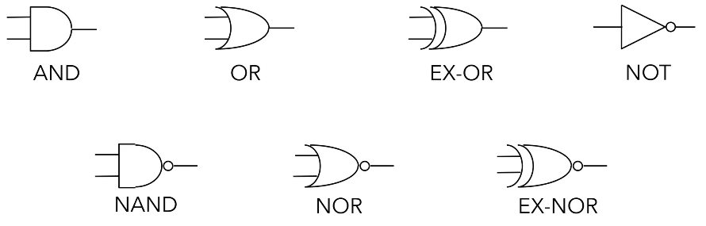
AND, OR, NOT are termed the fundamental gates because they can be used to build any of the functions that you see in the table above – meaning that they can also be used to build a circuit that fulfils the functions of the other gates you see below (NAND, NOR etc.).
Aside from the fundamental gates, the NAND and NOR gates which are termed the universal gates are important to understand as well because using either multiple NAND gates or multiple NOR gates we can build each fundamental gate. You either need NAND or NOR, you don’t need the other.
Additionally, while the EX-OR gate is not one of the fundamental or universal gates it is very useful as well.
\[f = A \oplus B = \bar A \cdot B + A \cdot \bar B\]Simplifying Logical Expressions using Boolean Algebra
The motivation for simplifying logical expressions is economic. When producing microprocessors, we usually want to optimise (minimise) the amount of materials we use to reduce cost – which mean to use a minimum amount of silicon and other resources. Therefore, as much as possible, we will want to reduce the number of logic gates that we require for a particular circuit.
This leads us to the idea of circuit equivalence where a Boolean function can have many different but equivalent Boolean expressions, and therefore different combinations of logic gates. What’s important is that given a function we are able to create equivalent circuits that:
- Perform the designated function
- Use the types of gates available (these are usually dependent on the physical implementation e.g. only want to use NAND gates or maybe we have some 4-input gates etc.)
- Minimise the number of gates used and hence cost.
There are two crucial skills to have:
Logic Circuit to Truth Table

Truth table to Boolean Equation

Laws of Boolean Algebra
In an exam, it is crucial that you state which rules you are applying so that what you are doing is clear to the marker.
| Name | Conjunction (“and” form) | Disjunction (“or” form) |
|---|---|---|
| Identity | \(x \cdot 1 \equiv x\) | \(x + 0 \equiv x\) |
| Null | \(x \cdot 0 \equiv 0\) | \(x + 1 \equiv 1\) |
| Negation | \(\overline{\overline{x}} \equiv x\) | \(\overline{\overline{x}} \equiv x\) |
| Idempotence | \(x \cdot x \equiv x\) | \(x + x \equiv x\) |
| Inverse (AKA: Excluded Middle) | \(x \cdot \overline{x} \equiv 0\) | \(x + \overline{x} \equiv 1\) |
| Commutativity | \(x \cdot y \equiv y \cdot x\) | \(x + y \equiv y + x\) |
| Associativity | \((x \cdot y) \cdot z \equiv x \cdot (y \cdot z)\) | \((x + y) + z \equiv x + (y + z)\) |
| Distributivity | \(x + (y \cdot z) \equiv (x + y) \cdot (x + z)\) | \(x \cdot (y + z) \equiv (x \cdot y) + (x \cdot z)\) |
| Absorption | \(x \cdot (x + y) \equiv x\) | \(x + (x \cdot y) \equiv x\) |
| De Morgan’s | \(\overline{(x \cdot y)} \equiv \overline{x} + \overline{y}\) | \(\overline{(x + y)} \equiv \overline{x} \cdot \overline{y}\) |
The best way to get good at this is to practise.
Karnaugh Maps / K-maps
Using Boolean algebra, it can be difficult to tell whether an equation is in its simplest form or to see the next step to simplifying it. K-maps show unambiguously when a Boolean expression is in its simplest form.
Grey Coding. Because sum of products can be simplified by looking for terms that differ by only one variable and its complement, when we draw out a kmap we have to grey code – which mean each cell only differs by 1 variable from its neighbours (horizontally and vertically) as you can see below.

Karnaugh Map Grouping. The first step to finding the simplest expression is to form K-map groupings. There are some things/rules/features to note about this.
- Wrap-around is valid. This means the left most-column is adjacent to the right most-column, and the top row is adjacent to the bottom row. So the orange and green cells, and the blue and green cells are adjacent.
- Groupings can overlap. The cells don’t have to exclusively be in just 1 group.
- The minimum logic expression is obtained on minimum number of groupings.
- Number of elements in the group must be a power of two 1,2,4,8 etc..

The second and last step is to look within a particular group and omit the case/variable that changes from the group’s logic expression and include those that stayed constant. This is because those that change are not definitional to the group’s logical expression.
The values of the cases/variables that stayed constant depend on the value within the grouping. In the example below B changes within the blue group so it is omitted, and both A and C stayed constant with value 0 so the final logic expression for the blue group is \(\overline{A} \cdot \overline{C}\).

Multiple equivalent expressions
In the exams, there will be no penalty if you give either answer but note that in reality sometimes the final choice comes down to the resources you have available like the number of NOT gates that you can use.
Additionally, there are some expressions that are impossible to simplify. This example is just one of the very few logical expression that you cannot simplify because you cannot get any groupings more than 1.

Don’t Care Conditions
Sometimes a certain combination of inputs either can’t happen or we don’t care what the output is if it happens. We denote this with a ❌ in our K-maps which may be assumed to be either 1 or 0 — we don’t care.
These can allow us to create a simpler logic expression. If you take a look at the left K-map, you can see that there’s an outstanding 1 just below the ❌, and there are multiple ways we can choose to group it. If we do it like in the right K-map, you can see that we arrive at a slightly simpler logic expression – and the only reason we can group it that way is because the 01-00 cell is a don’t care condition.
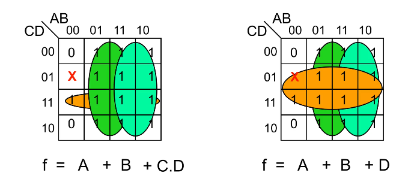
Combinatorial Logic Circuits
A logic circuit whose output is a logical function of its input(s).
Perform as fast as your gates.
1-bit Half-Adder
This circuit performs the addition of two bits, and can be extended to form a 1-bit full-adder. What’s important is that you recognise that the truth table for sum represents that of an EX-OR gate, while the carry represents that of an AND gate.
This is important because to derive the layout of the circuit, you can start from thinking about what you want to achieve first, i.e the addition of two bits. The truth table essentially describes this function and from there you can think about which gates you have to use and how they should be arranged according to the 1s and 0s in the truth table.

1-bit Full-Adder
A 1-bit full adder is capable of adding two bits (A and B) and considering a carryin from another 1-bit full adder, to produce an output sum and a carryout.
 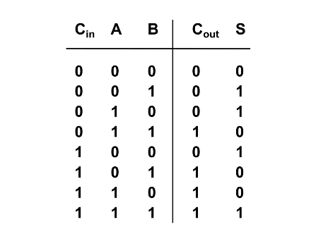
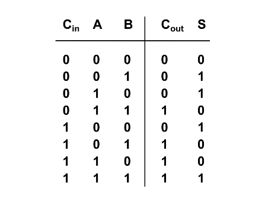
To design a circuit of a 1-bit full adder it is helpful to think about the logic gates needed based on the truth table above. Pay attention to how the value of Cout and S relate to Cin, A, and B and try to think of the logic gates needed to emulate this behaviour/function.
It is highly suggested that you try this on your own before clicking to see my own attempt – and also take mine with a pinch of salt and tell me if you think I’m wrong or can be better!
My design of a 1-bit Full-Adder
Looking at the truth table shown earlier, I realised that $$Sum = (A \oplus B) \oplus C_{in} \\ C_{out} = A \cdot B + C_{in} \cdot (A \oplus B)$$ With these two logic expressions, I was able to decide which logic gates to use to arrive at my final design for the full adder.

N-bit Full-Adder
Once we know how to design a 1-bit Full Adder (FA) we will be able to build a n-bit full adder which we can use to add 2 n-bit words (A and B) together. We do this by assigning each bit of A and B to each FA, and just like how we do long division we add each bit together, starting from the LSB (where the carry in is obviously 0) and then taking the carry of each FA and feeding it to the next FA until you reach the nth FA.
The output of each sum (Sk) and the final Cout is then “dealt with” to arrive at the sum of A and B. It is important to consider how you would “deal” with all these bits, and also important to note that if Cout is 1 then it means you have an overflow.

Adder to Adder/Subtractor
To convert an adder into an adder/subtractor we simply add a control input Z such that:
\[Z = 0 \Rightarrow S = A + B \\ Z = 1 \Rightarrow S = A + (-B)\]Recall. We calculate –B using two’s complement
- Invert the N-bit binary number B with Z ⊕ B
- Add 1 (Carry In)
N-bit Adder/Subtractor
You can see that Z is fed as the Cin of the first FA, this has the effect of adding 1 to arrive at the proper value for the two’s complement B. From above, Z is EX-ORed with each bit of B and this has the effect of inverting the bits to get -B. When we are adding, then Z will be 0 and will have no effect on B.
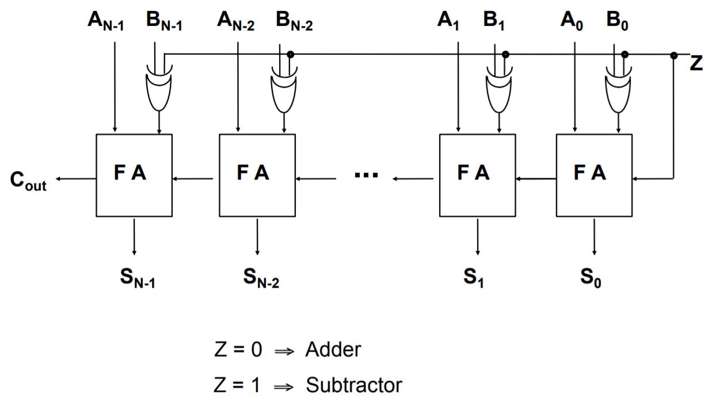
Remember because the numbers are in two’s complement form, the final Cout should be ignored in the calculation. However, it is significant in the “Assembler” topic because the Cout goes to your Condition Code Register (CCR) as the Carry Flag.
FYI. If the value of Cout is different from the carry going into the last FA (the carry from the 2nd last FA), there is an overflow. You can read more about it here or wikipedia.
Active High or Active Low?
Transistor-transistor logic floats high – meaning that if you don’t connect it to anything, its value is a logical 1. Hence, it is helpful for 0 to be the active state so that you are not accidentally enabling circuits.
In some circuit applications, outputs and inputs have active and inactive states (you’ll see more of this in Three State Logic) and it is important that your input(s) and output(s) conform to the same standard.
- Active high. 0 is inactive and 1 is active.
- Active low. 0 is active and 1 is inactive. This is sometimes indicated with Enable – so if you see this bar it means that particular input/output is active low.
Decoders
A decoder has k input pins and 2k output pins. This is because with k inputs can have 2k possible states/combinations and can represent the same number of output values.
Decoders are often used to address unique memory locations in a microprocessor system.
Here we have an example of a truth table for an active low decoder on the left. Notice that the distinct value of each Yi is 0, which makes sense that because we only want 1 possible output to be active for a particular input state. The truth table for an active high decoder is on the right (notice how the Yi bits are all flipped compared to active low).
 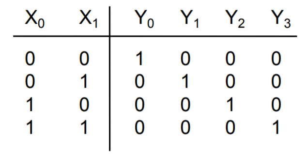
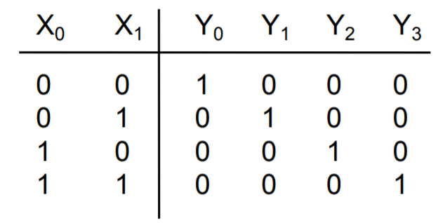
Encoder
The opposite of a decoder, where you take multiple input values and you define it in a more concise representation. Here you have 2k input(s) and k outputs. However, unlike the decoder where the inputs take all possible states, only one of the input pins should be active at a time.
Encoders usually used in communication because it is more efficient and succinct to send a compressed representation of certain values. Often used as simple input circuits.

Multiplexers (MUX)
A very common mechanism for selection.
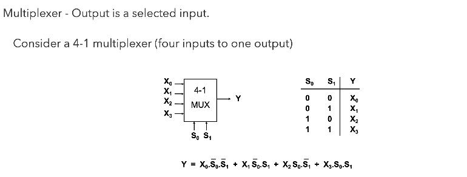
Common Applications of Multiplexers.
Source selection control - Home stereo, e.g: send iPod, CD or radio to speakers - note that this is analogue not digital
Share one communication line between multiple senders - Requires both MUX and DE-MUX
Parallel to serial conversion - Parallel input on X, clock signal on S, serial output on Y
Circuit that can be configured to produce any truth table relationship between S inputs and Y outputs - Set up the truth table required on X inputs.
De-Multiplexers (DE-MUX)

Common Applications of De-Multiplexers.
Share one communication line between multiple senders – Requires both MUX and DE-MUX
Series to parallel conversion
A control for multiple lights – In a gambling machine you might connect a processor to A and S and connect Y outputs to lights, such that the processor runs in a rapid loop addressing each light sequentially.
Sequential Logic Circuits
A logic circuit whose outputs are logical functions of its input(s) and its current state.

Flip-Flops
A basic building block of memory. Level triggered devices (a device that responds to 1s and 0s) that are stable in only two states (bistable – Q and P are always opposite). I think the best way to understand the flip-flop is to look at the truth table and the timing diagram together.


- Note that Q and P are always different values as long as R and S are not active (0 because they RS are active low) at the same time.
- Next, see how Q starts off active in the diagram, and changes from 1 to 0 when R changes from 1 to 0? I think it’s better to think of this as Q is reset when R is activated (or R resets Q).
- Then also notice how when R is made inactive (goes back to 1), the value of Q and P don’t change. This is how the flip-flop is able to store a value when both S and R are inactive.
- S is activated, and Q is set to 1, while P resets to 0.
- Again, when S is deactivated, the value of P and Q don’t change. Only if R is activated again, do the values of P and Q flip.
- Now that you have understood that, you can look at the circuit diagram and see how and why having both S and R set to 0 leads to both Q and P to be 1 which violates the rule of the flip-flop as a bistable (P should be equal to Q) and is a hazard condition.
D-Type Latch
The first two NAND gates and the NOT gate ensure that the intermediate values just before the orange section can never both be 0 so we won’t have the hazard condition.

When we want to store data, we have that data at D, and we set Enable to 1 (or trigger the “latch”). Only then will the data from D go to Q. Otherwise, you can see from the truth table that Q and Q don’t change and behaves like memory.
The D-type is a fundamental component, so you should know how to draw it and understand its function. You should also understand how the D-type works with registers, shift registers, and counters.
The D-type latch (delay) is a type of clocked flip-flop and there are others like the T-type (toggle) and the JK-type. Clocking and enabling are used fairly interchangeably but the right term is clock. All the “latches” above changes only on the rising edge of the clock input, they only respond to change.
Three different kinds of triggers
Level triggered - 1s and 0s
Rising edge triggered - transition from 0 to 1
Falling edge triggered - from 1 to 0
N-bit Register
The diagram shown below, is a parallel-load register, each bit of A is fed to a D-type latch as input and we are storing each bit of A in the corresponding “memory location” of Q.
When we provide a clock pulse, we are providing the transition from a 0 to a 1 and 1 to 0 probably afterwards. The D type will only respond to the 0 to 1, when that happens, each bit of A fed into each D type will go to each Q. No change will happen to Q unless we clock it again. This is how we can store data and the stored number appears on the outputs of Q.
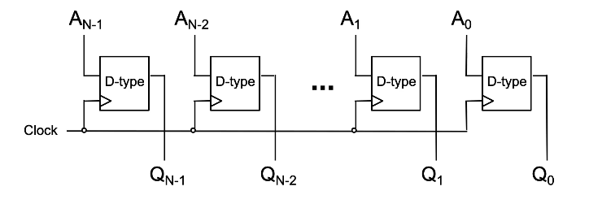
Note that this diagram is incomplete – you should always label the D & Clk inputs, and the Q & Q outputs in an exam.
An alternative design is…
N-bit Shift Register
The concept here is largely the same as the parallel-load register but is fed serially. This register stores one bit of a word/number A at time (starting from LSB of A) and shifts each prior bit to the next Q on the subsequent clocks until we clock the MSB of A into QN-1.
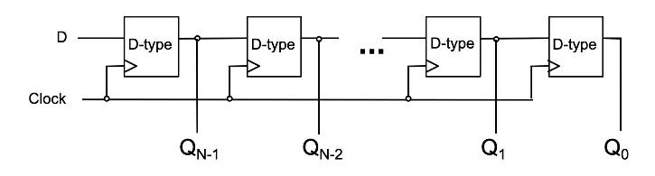
Usually used for serial to parallel conversion, because after feeding all N bits of A into the register each bit can be read in parallel from Q.
Once you’ve understood all the parallel and shift register…
N-bit Counter
You need to know how to explain this.

Let’s run through the values of the counter. Note that the circles on the flip-flops aside from the first one indicate an inverter, which mean that those flip-flops are clocked only on the falling edge of the previous output.
- Assuming all Qs start at 0. That means that the value of Q is 1 and that is fed to D. On the rising edge of the clock (low to high), Q0 changes from 0 to 1. So now the value stored is
1000. - On the next clock, Q0 changes from 1 to 0, thereby also clocking the 2nd D-type which gives Q1 the value 1 from 0. Now the value stored is
0100. - On the next clock, Q0 goes from 0 to 1, and Q1 doesn’t change because the Q0 just transitioned from low to high.
Since the value of each Qi represents a particular power of 2, notably 2i, when the counter is clocked…
- If Q0 (which represents 20 = 1) is 0, it changes to 1 thereby increasing the count by 1.
- If Q0 is 1, then it changes from 1 to 0, supplying a falling edge clock to the next D-type which changes the value stored at Q1.
- Now we can repeat the same condition for Q1 as it was for Q0 and hence for every Qi.
Because the Q of each falling edge clocked D-type will only change from 0 to 1 when the output Q of the prior D-type changes from 1 to 0, this also means that the Q of all prior D-types until Q0 changed from 1 to 0.
This emulates counting because each clock directly affects the first D-type only, and when all the bits of Q so far are not enough to represent the value of the next count, the clock would change Q0 from 1 to 0 and the falling edge clocking mechanism of the subsequent D-types will trigger, changing each Q from 1 to 0 until the first Qi that is 0 (not 1). Essentially, the counter switches to a higher power of 2 when it needs to.
So the output of the counter on each clock will look like..
0000
1000
0100
1100...
Three State Logic & Physical Implementations
In some logic components, termed a three-state buffer, whose output can be in three states: 1,0, or UNCONNECTED. Looking at the diagram below, when B is high the buffer is unconnected and vice versa. It can be thought of as a switch.
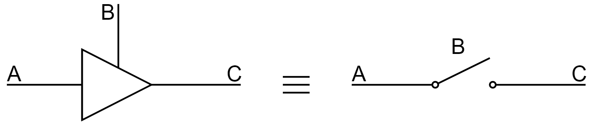
This is useful because we can provide communications between logical subsystems in an efficient way by sharing communication paths (buses). The buffers that share a common bus cannot be active at the same time!
Without three-state buffers, if you connect two outputs together you could be connecting a 1 to a 0 and cause a short circuit.
Propagation Delay
In practice, logic gates have propagation delay, typically 1x10-9s or less. These delays limit the speed at which logic circuits work. While propagation delay can be reduced by putting logic gates close together, ultimately the design of your circuits play a big part as well. You can think of propagation delay as the collective operating speed of the circuit.
We’re usually interested in the maximum propagation delay and we do this to make sure that our circuit doesn’t cross the so-called “event horizon” where the change in the input is not registered by the output for a relatively significant amount of time because of propagation delay. If another component relies on this output and another input, this may cause some problems especially for systems that have to respond quickly.
Logic Integrated Circuits (ICs)
Programmable logic devices allow much larger circuits to be created inside a single chip.
- Programmable Array Logic (PAL) - The first popular programmable device was one-time programmable
- Programmable Logic Array (PLA) - Device contains an AND array, which feeds an OR array, providing a physical implementation of a sum of products.
- Field Programmable Gate Array (FPGA) - One of several modern possibilities, which can contain million of gates - enough for an entire processor.
PLA
Works by providing links/fuses that can be broken to produce a custom sum of products. As long as you are able to understand circuit diagrams you should be able to understand how you arrive at the sum of products for each output of the PLA.
Assembler
Microprocessor Fundamentals
Before diving into assembler, we need to be familiar with the key components of all CPUs. No matter how complex a CPU is, they always have the two following components.
- Arithmetic Logic Unit (ALU): this performs math and logic
- Control Unit (CU): this decodes program instructions and handles logistics for execution
- Program Counter (PC): this tracks the memory address of the next instruction for execution
- Instruction Register (IR): contains the most recent instruction fetched
- Memory Address Register (MAR): contains the address of the region of memory for read/write purposes
- Memory Data Register (MDR): contains fetched data from memory or data ready to be written to memory. The MDR is also sometimes referred to as the Memory Buffer Register (MBR).
Remember that the Control Unit is connected to all components
In the Von Neumann architecture of microprocessor design, both instructions and data are stored in the same memory (In Harvard architecture they are separated)
Each instruction is split into two parts, the opcode and the operands. The opcode indicates which instruction it is, and the operand the parameters of the instruction
The fetch-decode-execute cycle
The CPU works by executing instructions in sequence to perform a task. Since the instructions are stored in memory, we need three steps to do this called the fetch-decode-execute cycle:
The CPU will constantly perform the following instruction cycle (the fetch-decode-execute cycle):
- Retrieve instructions from memory
- Decode to form recognisable operations
- Execute to impact the current state
❕❗ Learn the fetch-decode-execute cycle. Think of it every time you look at a CPU, or a series of instructions. Think about which of the components (the CU or the ALU) are operating and when.
The instruction cycle takes place over several CPU clock cycles – the same clock cycles we saw in sequential logic circuits. The fetch-decode-execute cycle relies on several CPU components interacting with one another.
The operations composing the cycle are:
Fetch stage
- Copy the address of the next instruction stored in the program counter to the memory address register
- Read the instruction in the main store at the address in the memory address register into the memory data register
- Copy the instruction from the memory data register to the instruction register
- The instruction is sent from the instruction register to the control unit to be decoded in the next stage
- Increment the program counter to point to the address of the next instruction
In register transfer language, fetching would look like
[MAR] <- [PC]
[MBR] <- [MS([MAR])]
[IR] <- [MBR]
CU <- [IR(opcode)]
[PC] <- [PC] + 1
This is explained in further detail here.
Note that the in different resources, the time at which the PC is incremented sometimes differs - most of the time (and in Matt’s notes) it is said to be at the very end of the fetch stage source #1, source #2, but sometimes it is said to be immediately after it is copied into the memory address register source #3 - this is likely due to differences in implementation
Decode stage
-
The control unit extracts and decodes the opcode from the instruction in the instruction register
-
The effective address is read to establish opcode type
If indirect addressing is used, more data needs to be read from the main store (MS) before the instruction is executed, but if direct addressing is used, the execution can proceed immediately
Execute stage
- The control unit signals to functional CPU components, e.g. to indicate which busses to enable, or set whether the main store should be read from or written to
- Changes in the state of the machine, e.g. data registers, program counter, main store, resulting from the execution of the instruction may occur
Registers
Now that we have the FDE cycle established, we need registers to help store intermediate information- this can either be in the form of memory or system flags. The Motorola 68008 will be used to give context to each type of register:
You can think of a register as a parallel set of bits which can be toggled on or off.
Data registers
- These are useful for storing frequently used values or intermediate results of calculations.
- You typically only need one data register on chip – however, the advantage of having many registers is that fewer references to external memory are needed.
The 68008 has 32 bit data registers. This is a long register; 16 bits form a word, and 8 bits form a byte.
Status registers
- These have various status bits that are set or reset by the ALU.
- They are a set of flags:
- Half are for the system (CU)
- The conditional control register is a subset of flags
| ⬅ System byte ➡ | ⬅ User byte ➡ |
|---|---|
| 8 bits | 8 bits, where a few bits will make up the CCR |
The CCR is made up of several bits representing statuses such as extend, negative, zero, overflow, carry. If you wanted to check the status of the computer in a program, you could use bitwise AND against a bitmask (the string of bits you want toggled) and seeing if the final result is the flag you wanted to see.
Address register
- These are used as pointer registers in the calculation of operand addresses.
- Operations on these addresses do not alter the CCR.
- Only the ALU has the capacity to incur changes in status (through operations on non-addresses).
Stack pointer
- This is an address register that points to the next free location; it can hold subroutine return addresses.
The 68008 has pointer registers
A0-A6whilstA7is used as a system stack pointer.
Program counter
We are already familiar with what the PC does – it is a 32 bit register on the 68008 that keeps track of the address at which the next instruction will be found.
If you were writing a software emulator, think of the memory as an array of strings (each string is an opcode). The PC would be an integer; your code would access
memory[PC]to find out which opcode to pull from the memory and decode. Therefore, by incrementing the PC (an 8-bit, 16-bit, or 32-bit integer in your code) you can increment through the memory array. You can sometimes increment the PC by multiple amounts. Generally speaking, if you were to be writing an emulator for any CPU, you could represent each register as an n-bit unsigned integer as you can toggle bits and perform bitwise operations, including bitshifts, on each integer variable. You would typically want to implement memory as a simple array of m-bit integers, where m is the word length of your CPU.
Register Transfer Language
RTL is used to describe the operations of the microprocessor as it is executing program instructions. It is also a way of making sure we access the correct parts of the microprocessor – do not confuse it with assembler instructions.
| Example RTL | Meaning |
|---|---|
[MAR] ⬅ [PC] |
Transfer the contents of the PC to the MAR |
[MS(12345)] |
The contents of memory location 12345 in the main store |
[D1(0:7)] <- [D0(0:7)] |
Transfer the contents of the 1st 8bits of D0 to the 1st 8bits of D1 |
Example: Instruction fetching
Given a series of instructions in words, we can find a way to represent this in RTL. Consider the following example:
| Plain words | RTL equivalent |
|---|---|
| Contents of PC transferred to MAR address buffers | [MAR] ⬅ [PC] |
| Load MBR from external memory, and set \(R / \bar W\) to Read | [MBR] ⬅ [MS([MAR])]; \(R / \bar W\) to Read |
| Transfer opcode to IR from MBR | [IR] ⬅ [MBR] |
| Decode the instruction | CU ⬅ [IR(opcode)] |
| Increment the PC | [PC] ⬅ [PC] + 1 |
If you wanted to add a constant byte to a register (take D0 from the 68008), you would engage the ALU and then transfer this into a register:
{ continue previous cycle }
[MBR] ⬅ [MS([MAR])]
ALU ⬅ [MBR] + D0
[DO] ⬅ ALU
As you can see, RTL describes how we can specifically set values in registers and interact with components in a standardised language.
Assembly Language
You should be able to explain the motivations, applications, and characteristics of high-level and low-level programming languages.
Code written in high-level programming languages typically go through a compiler, or for some languages like Python an interpreter (FYI only), and is eventually translated into machine code that your microprocessor understands. Low-level assembly code is assembled by an assembler into machine code.
Sometimes, the compilation process first compiles code into a lower-level assembly language and then the assembler assembles it into machine code, but in other cases high-level languages can be translated directly to machine code. I previously had the misunderstanding that high-level languages are always compiled to some kind of assembler language and is then assembled to machine code, but this is not the case.
The motivation for low-level languages is to give programmers more control of how the microprocessor executes a particular program, as it allows you to define the exact sequence of instructions that will be executed by the microprocessor. High-level programming languages don’t have the capability to provide such specific instructions. Sometimes, this means that the resultant machine code has greater performance than one that was compiled from a high-level language.
| High-level Language | Machine Code | Assembler Language |
|---|---|---|
| Human readable. Difficult to translate into performant machine code whilst retaining original intention. |
Not readable. | More readable than machine code but more precise than high-level languages. |
Assembly language saves us from machine code by using mnemonics. We can provide memory locations and constants, as well as symbolic names. These features are not afforded to us by RTL!
Assembler Format
Assembly language typically takes the following form:
|   | Label (Optional) | Opcode | Operand | Comment |
|---|---|---|---|---|
| Example | START: |
move.b |
#5, D0 |
|load D0 with 5 |
Assembly Language Conventions
There are several conventions of Assembly language to keep in mind:
| Number Symbol | Meaning |
|---|---|
# |
Indicates a constant. A number without # is an address. By default, numbers are in base 10. |
$ |
A hex value. E.g. ORG $4B0 | this program starts at hex 4B0 |
% |
A binary value. E.g. add.b #%11, D0 | add 3 to D0 |
| Directives | Definition | Convention | Example |
|---|---|---|---|
| Label names | You can assign labels to represent bytes or instructions | Label or name followed by : |
ANS: DS.B 1 will leave 1 byte of memory empty and name it ANS |
Defining storage (DS) |
Instruct the assembler to reserve some memory | DS.{data type} {amount} |
DS.B 1 will leave 1 byte of memory free. See data types further on. |
Origin (ORG) |
Tells the assembler where in memory to start putting the instructions or data | ORG followed by value |
ORG $4B0 starts the program at hex 4B0 |
If you want to string together an assembler instruction, you typically write them in the form
operation.datatype source, destination
Data types and assembler instructions
Previously, we saw how the DS directive requires a data type and then an amount of data to set aside; Assembler language defines three types of data type:
- 8 bits / byte:
.b - 2 bytes / word:
.w - 4 bytes / long word:
.l
You can typically omit the data type and
.if you are working with a word.
Instruction set aspects
Generally speaking, there are two aspects to a CPU instruction set:
- Instructions which tell the processor which operations to perform
- Data movement: this is similar to what we have already seen with RTL
- Arithmetic instructions: keep in mind whether your CPU can operate on fractional numbers
- Logical instructions
- Branch instructions
- System control instructions
- Addressing modes tell the processor which ways it can access data or memory locations, or how they may be calculated by the CPU.
Addressing modes can provide data, specify where it is, and how to go find it. You may describe direct addresses, or relative addresses where you compare one address to another to find it.
Data Movement Instructions
The move operations are similar to RTL, just pay attention to the data type.
move.b D0,D1 | [D1(0:7)] <- [D0(0:7)]
moveb D0,D1 | same
exg.b D4,D5 | exchange contents of two registers
swap D2 | swap lower and upper words of D2
lea $F20,A3 | load effective address [A3] <- [$F20]
Arithmetic Instructions
Depending on your processor architecture, you may or may not have floating point support.
add.l Di,Dj | [Dj] <- [Di] + [Dj]
addx.w Di,Dj | also add in x bit from CCR
mulu.w Di,Dj | [Dj(0:31)] <- [Di(0:15)] * [Dj(0:15)] signed multiplication
You also have sub (subtract), mulu (unsigned mult), divu and divs. You don’t have to memorise or know these very well but the key takeaways are
- The “variables” (around the comma
,) are operated on sequentially (left to right). - The result of the operation is stored in the second variable (after the comma
,). - You can add or subtract bits from the CCR
- Division and multiplication use the first half of the bits available (unless specified) because the resultant register has a fixed bit length (32 bits in the above example).
Logical instructions
We can often use bitmasks to achieve our goals in conjunction with bitwise operations.
AND.B #%11110000, D3 | bitwise AND on 1111 0000 and first 8bits of D3
Additional pointers:
- Shift operations are fundamental; for example, you can multiply by 2 using left shift operations.
- Other operations such as rotations also exist.
Branch instructions
These are crucial for control flow statements; we typically branch based on conditions set in the CCR.
LDA NumA | Read the value "NumA"
CMP NumB | Compare against "NumB"
BCC Loc | Go to label "Loc" if "NumA" < "NumB", or in RTL: [PC] <- Loc
Example for illustration purposes (we don’t need to know what LDA or CMP is exactly just roughly understand the syntax). Branch instructions cause the processor to branch (jump) to a labelled address.
- CCR flags are set by the previous instruction
- The current instruction can test the state of the CCR bits and branch if a certain condition is met.
Subroutines and Stacks
Subroutines (JSR; jump, RTS; return) let you use the same code repeatedly reducing program size and improving readability. It is similar to functions.
Typically when a subroutine is called (with JSR <subroutine label>), the current address in the PC is pushed to a stack and your stack pointer points to the newly pushed address (current address). The address of the subroutine is “loaded” into the PC and the instructions in the subroutine is executed.
When RTS is called, the stack is popped and the popped address is put into the PC; the stack pointer points to the next address at the top of the stack.
Addressing modes
As mentioned earlier, there are several ways for the CPU to access memory; you should be familiar with the following, and they are found on many CPUs (not just the 68008):
| Address type | Definition | Example |
|---|---|---|
| Direct address | The address to act on is held within a specified register (in this case D2 and D3) |
move D3, D2 |
| Immediate address | The operand forms part of the instruction and remains constant - no fetch from memory is made | move.b #$42, D5 |
| Absolute address | The operand contains the address as an explicit constant – not useful because programs are stored at different addresses at each run-time. | move.l D2, $7FFF0 which moves the long value held in D2 to address $7FFF0 |
| Relative address | These all relate to the program counter to write position independent code | move d16(PC), D3 move contents that are located in the address +16 addresses from PC to D3 |
Indirect addressing is never on the exam; however, this is where we add offsets, increments, or indexed addressing to access memory or data.
Additional source #1, Additional source #2
Memory Systems
Memory hierarchy
When deciding on a memory technology, you must consider the following factors:
- Frequency of access
- Access time
- Capacity required
- Financial cost
The designer’s dilemma is the conflict that is caused by choosing between low cost, high capacity but slow access storage and high cost, low capacity, but fast access storage.
Ideally, we would want our storage access to be frequent, quick, and spatially efficient – the balance of these three leads to the cost of the storage.
The memory hierarchy is a way of addressing the designer’s dilemma to get the best out of each type of storage.
In practice, most programs exhibit locality, which our memory systems can take advantage of.
Temporal Locality – If a particular memory location is referenced, it is likely that the same location will be referenced again in the near future. Loops are excellent examples of temporal locality in programs.
Spatial Locality – If a particular memory location is referenced, it is likely that nearby memory locations will be referenced in the near future. Nearly every program exhibits spatial locality, because instructions are usually executed in sequence. Loops exhibit both temporal and spatial locality.
- Due to spatial locality, a reasonable assumption to make is that 90% of memory access is within ±2KB of the previous program counter location.
- Additionally, temporal locality states that these accessed memory locations are likely to be accessed again in the near future.
Thus, in such cases, data in these memory locations should be stored in memory that is as close to the CPU as possible (registers, cache, main store). However, this cannot be used for everything as it would incur a high manufacturing cost, and the total capacity would be limited. Data that is less frequently accessed should be stored in memory that is slower, higher capacity, and cheaper because the high speed of access is not needed.

Locality is not only a hardware feature – it is important for programmers to also write code which has ‘good locality’ – however, this is not typically a concern we have when writing higher level languages than assembly such as C or C++. I assume that the compiler will be optimising the code itself to ensure that the assembled code reflects these principles, as it leads to higher performance – if we have to keep accessing main store because we have exceeded the amount of cache available to us, or the information is not in higher levels of cache, then the access time can increase by orders of magnitude.
Cache Memory
Cache memory is a small amount (typically tens of kilobytes) of memory that can be built into the microprocessor or is very close to it, and can be accessed very quickly. Cache memory is used to store values in memory which are likely to be retrieved, so the read times are quicker than the main store.
- Cache is kept small to limit cost; it is also transparent to the programmer. However, this does allow some control over what is stored in it.
- A cache access is known as a ‘cache hit’.
- Cache speed is incredibly important – moving down the memory hierarchy will take orders of magnitude more time for similar memory hits.
Because of spatial locality, cache memory often prefetches the memory locations around the last PC memory location before it is needed, which means that in many cases the cache already has the memory needed, increasing read speeds of order of magnitudes as compared to fetching from the main store.
Due to temporal locality, the first time the processor reads from an address in main memory, a copy is stored in the cache. The next time the same address is needed, the copy in the cache can be used instead. So, commonly accessed data is stored in the faster cache memory.
Moore’s Law
Moore’s Law is focused on the transistor count within integrated circuits. It states that this count doubles roughly every two years.
Currently, single core frequency is tailing off; this has lead the industry to focus on multicore performance instead. Comparatively, memory access speed is improving much more slowly; access time and capacity can become a huge bottleneck when it comes to creating performant systems.
Note. Cache concepts are not fully included in these notes as they are not fully examined, and also do not feature in the revision videos. There are however several exam questions relating to cache which appear every year.
Memory Cell Organisation
Now that we’re familiar with different parts of the memory hierarchy, it’s crucial that we understand how this memory is actually constructed (down to the metal almost).
Semiconductor Memory (main store)
Semiconductor memory is the most common form of main store memory, otherwise known as RAM. It can be broken up into several groups:
- Static RAM (SRAM)
- SRAM uses a flip-flop as storage element for each bit.
- Dynamic RAM (DRAM)
- For each bit, the presence or absence of charge in a capacitor to determine a
1or0. - The capacitor charge leaks away over time, which requires periodic refreshing.
- DRAM is typically cheaper than SRAM which is why we accommodate for the higher overhead.
Refreshing DRAM incurs a constant overhead, which means that it does not increase per bit. This is because it is just a one-off cost for one group of DRAM cells.
- For each bit, the presence or absence of charge in a capacitor to determine a
Both SRAM and DRAM are volatile memory storage – therefore, power must continuously be applied to retain memory. Once power is removed, you cannot assume that the data is still stored. However, the similarities end there and it is crucial to recognise the differences between the two memory cells.
Always ask yourself about the cost of these memory technologies – it is the reason we have decided to use semiconductor memory as our main store.
| SRAM cells | DRAM cells |
|---|---|
| More complex – 5 to 6 transistors per cell | Simpler – usually just 1 transistor per cell |
| Provides better read/write times because of higher switching speeds. | Because it is simpler it is more compact, which allows for greater memory cell density. |
| Cache memory, both on and off chip, is implemented as SRAM | Cheaper to produce than equivalent SRAM memory, and hence is used for main memory |
DRAM can be organised even further:
- Synchronous DRAM (SDRAM)
- Rambus DRAM (RDRAM)
- Double Data Rate Synchronous (DDR SDRAM)
- Cache DRAM (CDRAM)
Organising memory
Memory cells
Before we begin organising memory, it’s useful to know what the individual memory cells will look like. Think of them as single boxes with the following properties:
- They only store two states (
1or0). - They are capable of being written to as well as read from. This is controlled by a \(R / \bar{W}\) line which determines which direction the information will flow from.
- They are enabled when a single pin, such as a
SELECTline, is powered.
You can think of a memory cell as a means of storing a single bit.
Storing single words
In order to store multiple bits together (i.e. words), we will simply store a series of memory cells next to each other. We will need some column selecting I/O to handle selecting the individual bits of the word correctly.

Storing multiple words
Now that we have organised individual words, we want to store multiple words in memory. We can use this grid arrangement to arrange the words in parallel as follows (imagine we wanted to store four of the 4-bit words shown above):

In our address decoder, we have \(log_{2} (W)\) many control pins, where \(W\) is the number of words we want to store in memory. (This is because each pin can be high or low, and hence refer to two distinct words). Address decoders are used to select a row of memory cells and the Column I/O specifies the exact cell to read or write to.
We want to maintain a square grid of cells. We could simply have a 16-bit word, which we partition into four individual words (it is possible to put smaller words into the registers of larger ones). However, this would require 16 data lines on the column selection IO, with each bit requiring power; this would be rather lopsided and would result in a column selector doing all the work. Maintaining a square grid means that we can balance the number of required pins across two different pieces of IO, each with their own power requirements.
We are trying to avoid long, narrow arrays when we design our memory cell arrays. We want to maximise space for memory cells and minimise space taken up by IO.
Detecting and Correcting Errors
Although this topic is within the memory systems lecture, it is fundamental to error detection on the whole and hence has its own section here.
Broadly speaking, there are two types of errors:
- Errors that occur within a system, e.g. in a memory system.
- Errors that occur in the communication between systems, e.g., in the transmission of messages or data between systems. This is what we will focus on.
Noise
- We typically send information through channels- when these channels become affected by unwanted information, they become noisy.
- Noise will arise from the physical properties of devices:
- Thermal noise
- Noise of electronic components
- Noise of transmission circuits
- Magnetic media will also have a “classic form of noise” due to the “random alignment of magnetic fields”.
Noise is always present. If it doesn’t come from the components themselves, it’ll come from external sources such as radiation. Noise is hence one of the limiting factors in computer systems.
In magnetic stores, when we have decreased area to store a bit, noise gets worse which increases the likelihood of errors.
Digital logic devices
We choose binary systems for our number systems as it provides us a high degree of noise immunity.
We also need to consider the tolerances of the components we use
Illustrating noise immunity, a trademarked Akram Analogy™
If you are comfortable with the idea of noise immunity and transistor-transistor logic voltage levels, you probably won’t need to read this.
To illustrate the first point, consider the following thought experiment:
- You and your friend have found a massive tunnel (assuming CS students step outdoors). The tunnel has water dripping and some other ambiguous sounds.
- You both stand at either end of the tunnel, and you realise now you want to say something to your friend. You have two choices:
- You can choose to simply clap your hands to get their attention (a binary communication system), OR
- You can choose to say a magic password that only they will respond to (a base-26 communication system).
Given the ambiguous sounds in the tunnel, which do you think your friend will be able to distinguish better? Would they be able to distinguish a clap above a specific volume? Or would they be able to distinguish the spoken magic password? How do you know when a sound is finally loud enough to constitute you communicating with one another?
This idea of a small window where we do not consider a signal high or low is widest when we use a binary system- if we had any more possible values, we would need to find even more ranges which we consider ‘nothing’ (i.e. neither 0 nor anything else).
Using binary means that we only focus on two logical values.
In the image below, you can see the illustrated example for the above analogy, with annotated TTL voltage levels for context.
There is a point at which if there is too much noise, i.e. a train suddenly passes through the tunnel, your clap will never be heard and is permanently lost- this is known as a loss/ collapse of immunity.
Detecting single errors
If we assume that errors occur at random due to noise, one could naively ask you to clap three times and hope that your friend hears majority of them- i.e., you could send the message several times and take a vote. However, this is a very expensive affair (you would get tired quickly).
We can make the further assumption that if the probability of one error is low, the probability of two errors close together is even lower. Using this knowledge, we can add a parity bit to the message which can summarise the property of the message. We can check that this property is intact to see whether the message has been altered; using a parity bit is typically cheaper and adequate in many situations.
Parity systems
There are many different types of parity systems, but the two main ones you should be focused on are the even parity and the odd parity system.
Each system will add an extra bit to the message which makes the number of logical 1’s even or odd depending on the system chosen.
| Non-parity message (7 bits) | Even parity bit added | Odd parity bit added |
|---|---|---|
100 0001 |
0100 0001 (two 1’s) |
1100 0001 (three 1s) |
It is possible to calculate the parity bit using hardware or software.
Finite automaton to calculate parity
The lecture slides contain a two-state finite automaton – this diagram shows how, for a message 110 travelling on an even parity system, we can use the automaton to reach a parity bit of 0, so the message to be sent is 0110.
Hardware to calculate parity
You can calculate the parity bit for a message by XORing each bit with one another. You can achieve this by connecting each pair of bits to an XOR gate; for an odd number of input bits, add a 0 for an even parity system and a 1 for an odd parity system.
Detecting multiple errors
In the real world, it is more likely that errors will appear in bursts.
Burst errors can be caused by number of reasons, including but not limited to network or communication dropouts for a few milliseconds.
In this scenario, there may be errors in multiple bits and single-bit parity will still hold. Therefore, we must move to checksums to check entire columns.
Bit-column parity
One way in which we can identify errors in multiple columns (i.e. multiple bits) is to use bit-column parity.
Take the message, Message, which is made up of seven 7-bit ASCII characters:
| Character | 7 Bits |
|---|---|
M |
100 1101 |
e |
110 0101 |
s |
111 0011 |
s |
111 0011 |
a |
111 0001 |
g |
111 0111 |
e |
111 0101 |
By arranging each column into its own message, we can then calculate a parity bit for each message:
| Column number | 7-bit column | Even parity bit |
|---|---|---|
| 1 | 111 1111 |
1 |
| 2 | 011 1111 |
0 |
| 3 | 001 1000 |
0 |
| 4 | 100 0000 |
1 |
| 5 | 110 0011 |
0 |
| 6 | 001 1010 |
1 |
| 7 | 111 1111 |
1 |
We can then take this column and turn it into a 7-bit message: 1001011 spells out ASCII K. Now, we can add K to the end of our original message, and send the final message MessageK.
This system will detect all burst errors of less than 14 bits; it will fail if an even number of errors occur in a bit-column (i.e., a message equal to 8 characters).
Error Correcting Codes: row and column parity
The above example only detects errors in columns- but it doesn’t stop us from using row correction at the exact same time. If we have both row parity and column parity, then we begin by checking if each column has correct parity. If we find a column with incorrect parity, we immediately begin going through the rows, and checking the parity of each row. If we find a mistake in a row as well, we simply need to invert the bit found in the column with an error. This ECC enables us to detect multiple errors and fix single errors.
I/O Mechanisms
There is no single I/O mechanism that is “better” than the others – it is important to understand the pros and cons of each mechanism and the situations where each should be used.
Note that although these mechanisms all deal with I/O, they have different objectives.
In particular, memory mapped I/O and DMA are mechanisms which are used to communicate with peripherals/devices. Polled I/O, interrupt driven I/O and handshaking are used for synchronization and would be used together with DMA or memory mapped I/O.
Memory mapped I/O
- Same address bus is used to address both memory and I/O devices.
- Memory addresses are associated with particular I/O devices – when we want to send data to an I/O device, we send it to that memory address; when we want to receive data, we just read from that memory address.
- Memory and registers on I/O devices are mapped to these address values. An I/O device can then operate as designed on the data in these addresses.
This means that all addressing modes supported by a CPU are available to I/O.
Advantages. No need for dedicated instructions, or for additional hardware. Addressing modes supported by the CPU are available to I/O.
Disadvantages. We are giving up portions of our memory to I/O devices. This is less of a concern for modern 64-bit processors with more address spaces, but is still relevant when sometimes you have no choice but to use a processor with constrained memory addresses like 16-bit legacy or embedded systems.
Polled I/O
Synchronising I/O devices with our CPUs is one of the biggest challenges associated with I/O systems, as most of our I/O devices operate at much slower speeds than the CPU.
Our CPUs operate much faster than IO devices, so while IO devices are doing their thing, the CPU can do other things.
Busy-wait polling, where your CPU is constantly reading and checking the status of a particular IO device (essentially waiting for it to be ready), is very wasteful of CPU time and power. Only time you not want to do this, is for devoted systems that want to keep checking for the output because it is important (e.g. temperature sensor in nuclear reactor).
Polling, interleaved with another task is a bit better because you can do other tasks while waiting for your I/O devices to be ready. But even then, this can lead to significantly delayed responses to that device, because your estimate for the the time-interval between status checks can still be off and there are cases where your CPU is dominated by the so-called side tasks.
Advantages. Simple software and hardware involved; usually some kind of
looppaired with some conditional checks and hardware support for the notion of “ready” is all that is required.Disadvantages. Busy-wait polling – waste of CPU time and power. If you have a power constrained device, this may not be good. Interleaving can still lead to significantly delayed responses to a particular I/O device – not a problem in most cases but is a serious issue if you’re working in a hard real-time context.
Handshaking
Handshaking is another way of solving synchronisation problems with I/O devices. There are 3 kinds of handshaking:
- Unsynchronised – where you just provide data to an I/O device for it to process.
- Open-ended – provide some data and assert its validity, after which the I/O device will handle the data.
- Closed-loop (the only true two-way communication) – data provided, asserted validity of data, recipient (I/O device) readiness.
Closed-loop handshaking allows both parties to know the period/time-interval where effective data transfer can occur. This is when both data is valid and I/O device is ready to receive. This way the CPU can more accurately predict when data transfer can occur and when it should do other things.
Handshaking can be implemented with software or specialised hardware, which often requires fewer CPU instructions. Hardware solutions are usually used in embedded systems when software is not available for you to use.
Interrupts
Another way to target synchronisation problems. CPU normally executes instructions sequentially, unless a jump or branch is made – an interrupt input can force a CPU to jump to a service routine. The key difference between interrupts and handshaking or polling is that it is asynchronous.
Interrupt requests may be ignored depending on the current task that the CPU is working on. The CPU compares the “priority” of the tasks and decides which tasks supersedes the other. Non-maskable Interrupts cannot be ignored and the CPU will have to service the interrupt.
It is possible for a masked interrupt which was initially ignored to become non-masked (i.e., necessary to service) if it has been ignored for long enough.
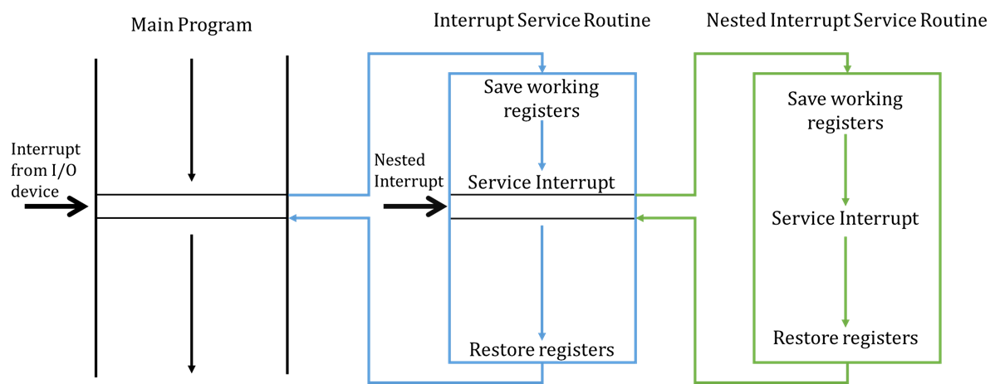
When an interrupt is serviced, typically the CPU will finish the current instruction it is working on and, save the state of the working registers and the program counter (usually saving this state on a stack). It will then process the interrupt service routine. Once complete, it will remove the program counter from the stack and start processing instructions again from where it left off.
Pushing and popping the PC and status registers onto the stack before and after servicing an interrupt is known as a context switch because we are changing the state to execute a different set of instructions.
Maskable interrupts can be interrupted as well, provided that the new interrupt is of a higher priority than the current interrupt. This is why popping the PC and registers onto a stack is useful so we can keep track and sequentially process different set of instructions based on priority.
Interrupts for IO examples
Some IO devices can generate interrupts themselves.
A hard drive can generate an interrupt when data, requested some time earlier, is ready to be read.
A timer can generate an interrupt every 100ms and the service routine can then read a sensor input.
A printer can generate an interrupt when it is ready to receive the next character to print.
Advantages. The asynchronous nature of interrupts allow fast responses and no waste of CPU time/battery power – especially when the IO devices are asynchronous themselves.
Disadvantages. But, all data transfers still controlled by CPU (DMA addresses this). Interrupts also make hardware and software more complex.
Direct Memory Access (DMA)
Interrupts rely on the microprocessor (CPU) to do everything and this makes it the bottleneck for I/O if there are large amounts of data that must be transferred at high speed.
DMA fixes this by giving control of the system buses from the CPU to the DMA Controller (DMAC).
- The DMAC is a dedicated device that controls the three system buses during the data transfer.
- The DMAC is optimised solely for data transfer.
Advantages. When dealing with large amounts of data, DMA-based I/O can be up to 10 times faster than CPU-driven I/O. CPU is able to process other instructions that do not require the system buses while the DMAC oversees data transfer.
Disadvantages. Additional hardware cost.
DMA Modes of Operation
Cycle Stealing. DMAC uses the system buses when they are not being used by the CPU – usually by using available memory access cycles not used by the CPU. This is less effective and less common then the next mode of operation. This is equivalent to if you were working for 20 minutes at a time, but knew that every 18th minute you would be inefficient- instead of continuing to work in this time, you let the DMA handle the bus.
Burst Mode. DMAC acquires system buses for the transfer of large amount of data at high speed and preventing the CPU from using the system buses for a fixed time OR…
- until the transfer is complete
- the CPU receives an interrupt from a device of greater priority.
This is usually the events that take place before the CPU surrenders control of the system buses:
- DMA transfer requested by I/O
- DMAC passes request to CPU
- CPU initialises DMAC
- Specifies if it is an Input or Output operation.
- Sets the start address for the data transfer to the DMAC Address Register.
- Sets the number of words to transfer to the DMAC Count Register.
- CPU enables DMAC to initiate the transfer.
- DMAC requests use of system buses depending on its mode of operation.
- CPU responds with DMA Ack when it’s ready to surrender buses.
Processor Architecture
Computer architecture concerns the structure and properties of a computer system, as viewed from perspective of a software engineer while computer organisation is the same but as viewed from the perspective of a hardware engineer.
Microprocessor Organisation
Considerations:
- How large is your main store? (no. of words) x (no. of bits)
- PC should have enough bits to be able to refer to every word in the main store.
- How many programmatic instructions (the “function” the mnemonics refer to e.g.
CLEARorADD) do you want to provide to software engineers?- Remember that every processor architecture has a different type of assembly language (assembly language is very processor specific).
- The size of your opcode will dictate the number of instructions you can allow programmers to use. E.g. 3-bit opcode = 23 = 8 different instructions.
- Your subsystems will have to communicate – we do this with shared busses and three-state buffers.
- How many arithmetic instructions do you have? This directly affects the number of function selects your CU must have. E.g. Lets say your processor has 4 arithmetic instructions:
CLEAR,DEC1(decrement),INC1,ADD#somevalue. Then you will need 2 function selects from your CU to your ALU to specify which arithmetic instruction the ALU is executing.
Micro and Macro Instructions
Macro instructions are the set of mnemonics that each represent a specific instruction that your processor understands. These are assembled into opcodes that your CU can take to “know” which sequence of micro instructions to carry out.
Each micro instruction corresponds to a specific signal that your CU can assert (we call these control actions), and when carried out in the right sequence, the final result/effect is that of the macro instruction.
Clock cycles
The number of clocks a macro instruction takes in total is technically the time the CU takes to execute the instruction. Since the value of the data at the in our registers/certain outputs don’t change unless there is a clock supplied, we can further categorise macro instructions into the number of clock cycles or control steps needed.
What this implies is that certain micro instructions can be executed simultaneously, as long as their control actions are independent of one another (so their inputs/outputs don’t depend on each other and hence a clock/enable signal).
Representation of Instructions
We know that instructions have an opcode, may have an operand, and stored at a particular address in memory which the PC points to. The example below shows how instructions may look like in memory for a processor with a 32x8-bit Main Store, 5-bit PC, 3-bit opcode:
| Address | Mnemonic | Opcode Operand |
|---|---|---|
| 0 | CLEAR |
000 00000 |
| 1 | LOAD 5 |
110 00101 |
| 2 | ADD #8 |
010 01000 |
| … | – | – |
It is important to note that this is just an example; the key takeaway is to a better idea of how instructions are represented in memory.
❗❕ Remember that before and in between each instruction shown in the example above, there is an implicit fetch step (recall FDE cycle).
In RTL this would be:
[MAR] <- [PC][MDR] <- [MS(MAR)][IR] <- [MDR][PC] <- [PC] + 1
Note that the 4th step is actually a macro-step because the processor will have to have some mechanism of incrementing the PC, which can be done using the ALU or something else – it all depends on the processor architecture. What’s crucial is that you are aware of all these nuances and have them in mind when dealing with this topic.
Control Unit Design
Before we concern ourselves with the internal design of the CU, let’s analyse it with a black box approach which is to analyse it based on its requirements and how that affects what inputs and outputs the CU needs.
| Requirements of CU | Implication |
|---|---|
| Needs to operate at or near clock speed of microprocessor | Needs to have a clock input. |
| Needs to be aware of the state of bits in the CCR | Has to be connected to the CCR and its flags. |
| Needs to take opcode from the IR | Needs an input for Opcode. |
| Needs to translate opcode into appropriate sequence of processes to essentially execute opcode instructions. | Needs Enable, Clock, and Read/Write lines to all the components/subsystems to assert the sequence of signals to carry out the opcode. |
| Needs to specify which arithmetic operation to carry out. | Needs to have Function select lines leading to the ALU. The number of function selects = \(log_2(A)\), where \(A\) is the number of arithmetic operations. |
The CU executes micro instructions by asserting a sequence of enable and clock signals which have to abide by a timing diagram that depends on the particular macro instruction. Once we have this timing diagram for every opcode, we can form a truth table that models each macro instruction. This truth table helps us distinguish between control rounds/clock cycles needed and we can use it to help design our CU.
There are two main approaches to control unit design.
Hardwired / “Random Logic”. Design the CU as a combinatorial logic circuit, transforming its input signals into a set of output signals based on the truth table we mentioned above.
Microprogrammed. Each machine instruction is turned into a sequence of primitive microinstructions, which form a microprogram, stored in a ROM called the microprogram memory.
Hardwired CU
The dominant technique, since roughly 1980s, for implementing control units in RISC processors.
| Component | Function |
|---|---|
| Sequencer – takes clock input of our microprocessor | Regulates/aligns the operation of the combinatorial logic circuit in the CU with the control steps/rounds we have for each macro instruction. These regulated signals should ideally match the clock frequency. |
| Instruction Decoder | Depending on the opcode, send a signal to a certain path that corresponds to a particular macro instruction. |
| Fetch/Execute flip-flop | Depending on the START_FETCH and START_EXECUTE signals, the flip-flop ensures that the CPU is only ever fetching or carrying out an opcode instruction (XOR relationship). |
START_FETCH & START_EXECUTE |
When high, these two signals reset the sequencer so that it is in sync with the fetch/execute flip-flop’s signals (either the Enable signal to the opcode decoder or the fetch signal). |
Advantages. Fast (operates as fast as logic gates).
Disadvantages.
- Complex hardware makes it difficult to design and test – many interconnections.
- Inflexible as it is difficult to change the design if new instructions are added.
- Long design time.

Microprogrammed
The dominant technique for implementing CUs, peaking in 1970s, for CISC processors.
| Terminology | Description |
|---|---|
| Microprogram routine | Describes how to generate the CU outputs for one macro instruction. Made up of micro instructions and stored in microprogram memory (a ROM) |
| Microaddress | A location within microprogram memory |
| MicroPC | The CU’s internal program counter |
| MicroIR | Internal IR used to hold current micro instruction |
| Microinstruction | Holds the CU output values and other fields to control the microprogram flow. |
Advantages.
- Ease of design and implementation
- Flexibility of design allows families of processors to be built
- Simple hardware compared to hardwired implementations
- Microprogram memory can be reprogrammed for new instructions.
Disadvantages.
- Slower than hardwired implementations.
Standard operation description
- When the microPC is powered, it initialises to micro-address 0 which corresponds to the fetch micro-program.
- The micro-instruction register (microIR) receives microinstructions and this is where the CU output values are set to the values recorded in each micro-instruction of the program. Hence, the CU is able to generate the appropriate control signals, as the micro-program executes, which correspond to the macro fetch operation.
- After each microinstruction has generated CU outputs, the microPC is typically incremented to the next microinstruction by a +1 circuit, except for the last fetch microinstruction.
- At this point the processor’s IR has been populated with the next opcode and this is fed as opcode inputs into the CU.
- There is a component in the microIR we can call the “next microPC calc type” (I don’t think this is the actual name) that is set to make sure that the microPC is not incremented with the +1 circuit but instead is set to the output of an OTOA circuit (which is essentially a lookup table of opcodes to micro-program addresses).
- This enables the microPC to jump to the microaddress of the microprogram specified by the opcode and the CU can execute that microprogram based on the values set by the micro-instructions inside the program.
- When it is finally the last microinstruction, the “next microPC calc type” is set such that the microPC is now set to the microIR “next microaddress” field.
- Opcode microprograms use this facility/mechanism to set the microPC back to the fetch microprogram address.
CISC vs RISC
Complex Instruction Set Computers vs Reduced Instruction Set Computers.
Some history. Initially (1970s), the control store was much faster than main memory and therefore microprogrammed overhead was only 50% of execution time. As hardware got more advanced, both became faster but the control store lost its advantage and was about as fast as main memory. This led to microprogrammed overhead of over 80% of execution time. So even though processors were becoming more “capable” with a growing instruction set size, these were not actually enabling people to build better, more performant code.
Publishing results by Fairclough et al. in IEEE Micro (1982) supported this as it showed that certain groups of instructions are far more commonly used than others.
| Instruction Group | Frequency of Use |
|---|---|
Data movement (move, store, load) |
45.28% |
Program flow control (branch, call, return) |
28.73% |
Arithmetic (add, sub) |
10.75% |
Compare (cmp) |
5.92% |
Logical (and, or) |
3.91% |
| Shift | 2.93% |
| Bit manipulation | 2.05% |
| Miscellaneous | 0.44% |
Many people decided to take a fresh look at the situation and a paper by Patterson and Ditzel coined the two terms, RISC and CISC. They proposed a fresh start – a new approach to building our microprocessors (RISC) that did away with backward compatibility.
This sparked a split in industry, where ARM is the main proponent for RISC – their approach was to reduce the set of instructions but retain efficiency and synergy between control signal and control steps, sacrificing backwards compatibility.
Intel took a different approach and serves a market which wants backwards compatibility. They took a hybrid approach where the simplest and most commonly used instructions are executed by a RISC core and the more complex ones are microprogrammed (CISC). Performance is competitive and legacy software can still run.